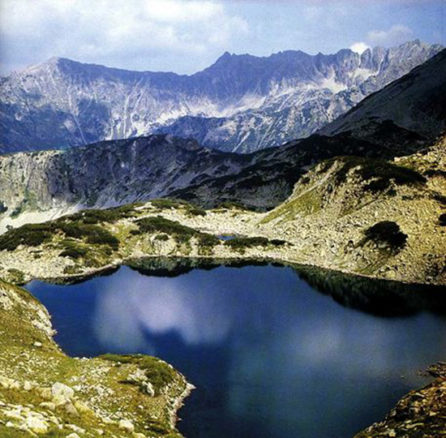
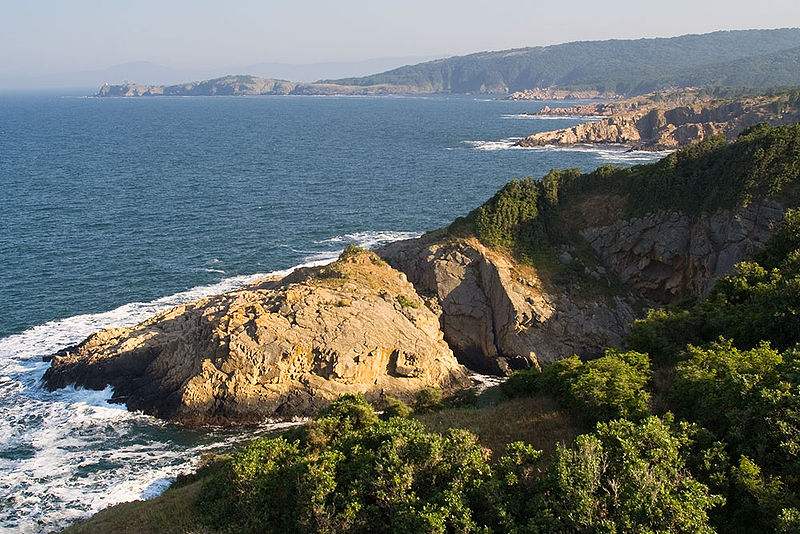
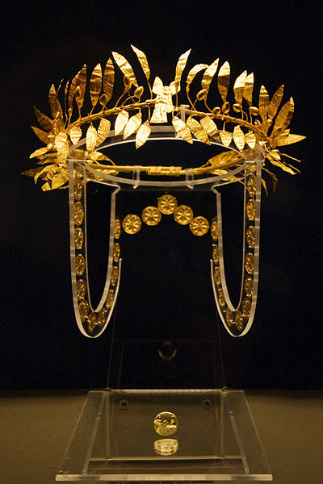

|
Bulgaria, officially the Republic of Bulgaria, is a country located in Southeastern Europe. It is bordered by Romania to the north, Serbia and Macedonia to the west, Greece and Turkey to the south, and the Black Sea to the east. With a territory of 110,994 square kilometres (42,855 sq mi), Bulgaria is Europe's 14th-largest country. Prehistoric cultures began developing on Bulgarian lands during the Neolithic period. Its ancient history saw the presence of the Thracians, and later the Greeks and Romans. The emergence of a unified Bulgarian state dates back to the establishment of the First Bulgarian Empire in 681 AD, which dominated most of the Balkans and functioned as a cultural hub for Slavic peoples during the Middle Ages. With the downfall of the Second Bulgarian Empire in 1396, its territories came under Ottoman rule for nearly five centuries. The Russo-Turkish War of 1877–1878 created the Third Bulgarian State. The following years saw several conflicts with its neighbours, which prompted Bulgaria to align with Germany in both World Wars. In 1946 it became a Socialist state with a single-party system. In 1989 the Communist Party allowed multi-party elections, following which Bulgaria transitioned to democracy and a market-based economy. |
The population of 7.36 million people is predominantly urban and mainly concentrated in the administrative centres of its 28 provinces. Most commercial and cultural activities are concentrated in the capital Sofia. The strongest sectors of the economy are heavy industry, power engineering, and agriculture, all relying on local natural resources. The current political structure dates to the adoption of a democratic constitution in 1991. Bulgaria is a unitary parliamentary republic with a high degree of political, administrative, and economic centralisation. It is a member of the European Union, NATO, and the Council of Europe; a founding state of the Organization for Security and Co-operation in Europe (OSCE); and has taken a seat at the UN Security Council three times. |
History
The Treaty of San Stefano was signed on 3 March 1878 by Russia and the Ottoman Empire, and included a provision to set up an autonomous Bulgarian principality roughly on the territories of the Second Bulgarian Empire.[51][52] It never went into effect, as the Great Powers immediately rejected the treaty out of fear that such a large country in the Balkans might threaten their interests. It was superseded by the subsequent Treaty of Berlin, signed on 13 July, provided for a much smaller state comprising Moesia and the region of Sofia, leaving large populations of Bulgarians outside the new country.[51][53] This played a significant role in forming Bulgaria's militaristic approach to foreign affairs during the first half of the 20th century.[54]
The Bulgarian principality won a war against Serbia and incorporated the semi-autonomous Ottoman territory of Eastern Rumelia in 1885, proclaiming itself an independent state on 5 October 1908.[55] In the years following independence, Bulgaria increasingly militarised and was often referred to as "the Balkan Prussia".[56][57] Between 1912 and 1918, Bulgaria became involved in three consecutive conflicts—two Balkan Wars and World War I. After a disastrous defeat in the Second Balkan War, Bulgaria again found itself fighting on the losing side as a result of its alliance with the Central Powers in World War I. Despite fielding more than a quarter of its population in a 1,200,000-strong army[58][59] and achieving several decisive victories at Doiran and Dobrich, the country capitulated in 1918. The war resulted in significant territorial losses, and a total of 87,500 soldiers killed.[60] More than 253,000 refugees emigrated to Bulgaria from 1912-1929 due to the effects of these wars,[61] placing additional strain on the already ruined national economy.[62]
The political unrest resulting from these losses led to the establishment of a royal authoritarian dictatorship by tsar Boris III (1918–1943). Bulgaria entered World War II in 1941 as a member of the Axis but declined to participate in Operation Barbarossa and saved its Jewish population from deportation to concentration camps.[63] The sudden death of Boris III in the summer of 1943 pushed the country into political turmoil as the war turned against Germany and the Communist guerrilla movement gained momentum. The government of Bogdan Filov subsequently failed to achieve peace with the Allies. Bulgaria did not comply with Soviet demands to expel German forces from its territory, resulting in a declaration of war and an invasion by the USSR in September 1944.[64] The Communist-dominated Fatherland Front took power, ended participation in the Axis and joined the Allied side until the war ended.[65]
The left-wing uprising of 9 September 1944 led to the abolition of monarchic rule, but it was not until 1946 that a single-party people's republic was established.[67] It became a part of the Soviet sphere of influence under the leadership of Georgi Dimitrov (1946–1949), who laid the foundations for a rapidly industrialising stalinist state. By the mid-1950s standards of living rose significantly,[68] while political repressions were lessened.[69] By the 1980s both national and per capita GDP quadrupled,[70] but the economy remained prone to debt spikes, the most severe taking place in 1960, 1977 and 1980.[71] The Soviet-style planned economy saw some market-oriented policies emerging on an experimental level under Todor Zhivkov (1954–1989)[72]. His daughter Lyudmila bolstered national pride by promoting Bulgarian heritage, culture and arts worldwide.[73] In an attempt to erase the identity of the ethnic Turk minority, an assimilation campaign was launched in 1984. This resulted in the emigration of some 300,000 of them to Turkey.[74][75]
Under the influence of the collapsing Eastern Bloc, on 10 November 1989 the Communist Party gave up its political monopoly, Zhivkov resigned, and Bulgaria embarked on a transition to a parliamentary democracy.[76] The first free elections in June 1990 were won by the Bulgarian Socialist Party (BSP, the freshly renamed Communist Party).[77] A new constitution that provided for a relatively weak elected President and for a Prime Minister accountable to the legislature was adopted in July 1991. The new system initially failed to improve living standards or create economic growth—the average quality of life and economic performance remained lower than under Communism well into the early 2000s.[78] A 1997 reform package restored economic growth, but living standards continued to suffer.[79] After 2001 economic, political and geopolitical conditions improved greatly,[80] and Bulgaria achieved high Human Development status.[81] It became a member of NATO in 2004[82] and of the European Union in 2007.[83]
Back to the Top
Geography

Bulgaria occupies a portion of the eastern Balkan peninsula, bordering five countries—Greece and Turkey to the south, Macedonia and Serbia to the west, and Romania to the north. The land borders have a total length of 1,808 kilometres (1,123 mi), and the coastline has a length of 354 kilometres (220 mi).[84] Its total area of 110,994 kilometres (68,968 mi) ranks it as the world's 105th-largest country.[85][86] Bulgaria's geographic coordinates are 43° N 25° E.[87]
The most notable topographical features are the Danubian Plain, the Balkan Mountains, the Thracian Plain, and the Rhodope Mountains.[84] The southern edge of the Danubian Plain slopes upward into the foothills of the Balkans, while the Danube defines the border with Romania. The Thracian Plain is roughly triangular, beginning southeast of Sofia and broadening as it reaches the Black Sea coast.[84]
The Balkan mountains run laterally through the middle of the country. The mountainous southwest of the country has two alpine ranges—Rila and Pirin, which border the lower but more extensive Rhodope Mountains to the east.[84] Bulgaria is home to the highest point of the Balkan peninsula, Musala, at 2,925 metres (9,596 ft)[88] and its lowest point is sea level. Plains occupy about one-third of the territory, while plateaus and hills occupy 41 per cent.[89] The country has a dense network of about 540 rivers, most of which are relatively small and with low water levels.[90] The longest river located solely in Bulgarian territory, the Iskar, has a length of 368 kilometres (229 mi). Other major rivers include the Struma and the Maritsa in the south.[84]
Bulgaria has a dynamic climate, which results from its being positioned at the meeting point of Mediterranean and continental air masses and the barrier effect of its mountains.[84] Northern Bulgaria averages 1 °C (1.8 °F) cooler and registers 200 millimetres (7.9 in) more precipitation annually than the regions south of the Balkan mountains. Temperature amplitudes vary significantly in different areas. The lowest recorded temperature is −38.3 °C (−36.9 °F), while the highest is 45.2 °C (113.4 °F).[91] Precipitation averages about 630 millimetres (24.8 in) per year, and varies from 500 millimetres (19.7 in) in Dobrudja to more than 2,500 millimetres (98.4 in) in the mountains. Continental air masses bring significant amounts of snowfall during winter.[92]
Environment and wildlife[edit]
Bulgaria adopted the Kyoto Protocol[94] and achieved the protocol's objectives by reducing carbon dioxide emissions from 1990 to 2009 by 30 percent.[95] However, pollution from factories and metallurgy works and severe deforestation continue to cause major problems to the health and welfare of the population.[96] In 2013, air pollution in Bulgaria was more severe than any other European country.[97] Urban areas are particularly affected by energy production from coal-based powerplants and automobile traffic,[98][99] while pesticide usage in the agriculture and antiquated industrial sewage systems produce extensive soil and water pollution with chemicals and detergents.[100] Bulgaria is the only EU member which does not recycle municipal waste,[101] although an electronic waste recycling plant opened in June 2010.[102] The situation has improved in recent years, and several government-funded programmes have been put into place in an attempt to reduce pollution levels.[100] According to Yale University's 2012 Environmental Performance Index, Bulgaria is a "modest performer" in protecting the environment.[103]
Bulgaria's biodiversity is conserved in three national parks, 11 nature parks[104] and 17 biosphere reserves.[105] Nearly 35 per cent of its land area consists of forests,[106] where some of the oldest trees in the world, such as Baikushev's pine and the Granit oak,[107] grow. Its flora encompass more than 3,800 species of which 170 are endemic and 150 are considered endangered.[108] The fauna is represented prominently by the brown bear and the jackal,[109] while the Eurasian lynx and the Eastern imperial eagle have small, but growing populations.[110]
Back to the Top
Politics
Bulgaria is a parliamentary democracy in which the most powerful executive position is that of prime minister.[80] The political system has three branches—legislative, executive and judicial, with universal suffrage for citizens at least 18 years old. Elections are supervised by an independent Central Election Commission that includes members from all major political parties. Parties must register with the commission prior to participating in a national election.[111] Normally, the prime minister-elect is the leader of the party receiving the most votes in parliamentary elections.[80]
Political parties gather in the National Assembly, which consists of 240 deputies elected to four-year terms by direct popular vote. The National Assembly has the power to enact laws, approve the budget, schedule presidential elections, select and dismiss the Prime Minister and other ministers, declare war, deploy troops abroad, and ratify international treaties and agreements. The president serves as the head of state and commander-in-chief of the armed forces, and has the authority to return a bill for further debate, although the parliament can override the presidential veto by a simple majority vote of all members of parliament.[80] Plamen Oresharski of the Bulgarian Socialist Party became prime minister on 29 May 2013,[112] while GERB-backed Rosen Plevneliev was elected president in 2011, after receiving 52.5 per cent of the votes on the second round against 47.5 per cent for his Socialist Party opponent Ivaylo Kalfin.[113] Until February 2013 GERB had 117 seats in the National Assembly and no permanent political allies, ruling as a minority government.[114]
The government resigned on 20 February 2013 after nationwide protests caused by high costs of utilities, low living standards[115] and the failure of the democratic system.[116] The protest wave was marked by self-immolations, spontaneous demonstrations and a strong sentiment against political parties.[117] As a consequence, the Parliament was dissolved and a new provisional government was set up by the President. The subsequent snap elections in May 2013 elections resulted in a narrow GERB win.[118]
Bulgaria has a typical civil law legal system.[120] The judiciary is overseen by the Ministry of Justice. The Supreme Administrative Court and Supreme Court of Cassation are the highest courts of appeal and oversee the application of laws in subordinate courts.[111] The Supreme Judicial Council manages the system and appoints judges. Bulgaria's judiciary, along with other institutions, remains one of Europe's most corrupt and inefficient.[121][122][123][124]
Law enforcement is carried out by organisations mainly subordinate to the Ministry of the Interior.[125] The National Police Service (NPS) combats general crime, maintains public order and supports the operations of other law enforcement agencies.[126] NPS fields 27,000 police officers in its local and national sections.[127] The Ministry of Interior also heads the Border Police Service and the National Gendarmerie—a specialised branch for anti-terrorist activity, crisis management and riot control. Counterintelligence and national security are the responsibility of the State Agency for National Security, established in 2008.[128]
Back to the Top
Economy
Bulgaria has an emerging market economy[152] in the upper middle income range,[153] where the private sector accounts for more than 80 per cent of GDP.[154] From a largely agricultural country with a predominantly rural population in 1948, by the 1980s Bulgaria had transformed into an industrial economy with scientific and technological research at the top of its budgetary expenditure priorities.[155] The loss of COMECON markets in 1990 and the subsequent "shock therapy" of the planned system caused a steep decline in industrial and agricultural production, ultimately followed by an economic collapse in 1997.[156][157] The economy largely recovered during a period of rapid growth several years later,[156] but individual mean income remains one of the lowest in the EU at 768 leva (393 euro) per month.[158] More than a fifth of the labour force are employed on a minimum wage of 1 euro per hour.[159] Wages, however, account for only half of the total household income,[160] owing to the substantial informal economy which amounts to almost 32% of GDP.[161] Bulgarian PPS GDP per capita stood at 47 per cent of the EU average in 2012 according to Eurostat data,[162] while the cost of living was 49 per cent of the average.[163] The currency is the lev, which is pegged to the euro at a rate of 1.95583 levа for one euro.[164] Bulgaria is not part of the eurozone and has abandoned its plans to adopt the euro.[165]
Economic indicators have worsened amid the late-2000s financial crisis. After several consecutive years of high growth, GDP contracted with 5.5 per cent in 2009 and unemployment remains above 12 per cent.[166][167] Industrial output declined with 10 per cent, mining with 31 per cent, and ferrous and metal production marked a 60 per cent drop.[168] Positive growth was restored in 2010,[167] although investments and consumption continue to decline steadily due to rising unemployment.[169] The same year, intercompany debt exceeded 51 billion euro, meaning that 60 per cent of all Bulgarian companies were mutually indebted.[170] By 2012, it had increased to 83 billion euro, or 227 per cent of GDP.[171] The government implemented strict austerity measures with IMF and EU encouragement to some positive fiscal results, but the social consequences of these measures have been "catastrophic" according to the International Trade Union Confederation.[172] Corruption remains another obstacle to economic growth. Bulgaria is one of the most corrupt European Union members and ranks 75th in the Corruption Perceptions Index.[173]
Economic activities are fostered by the lowest personal and corporate income tax rates in the EU,[174] and the second-lowest public debt of all member states at 16.5 per cent of GDP in 2012.[175] In 2012, GDP (PPP) was estimated at $104 billion, with a per capita value of $14,235.[3] Sofia and the surrounding Yugozapaden planning area are the most developed region of the country with a per capita PPS GDP of $23,162 in 2009.[176] Bulgaria is a net receiver of funds from the EU. The absolute amount of received funds was 589 million euro in 2009.[177]

The labour force is 2.45 million people,[178] of whom 7.1 per cent are employed in agriculture, 35.2 per cent are employed in industry and 57.7 per cent are employed in the services sector.[179] Extraction of metals and minerals, production of chemicals, machinery and vehicle components,[180] petroleum refinement[181] and steel are among the major industrial activities.[182] Mining and its related industries employ a total of 120,000 people and generate about five per cent of the country's GDP.[183] Bulgaria is Europe's sixth-largest coal producer.[183][184] Local deposits of coal, iron, copper and lead are vital for the manufacturing and energy sectors.[185] Almost all top export items of Bulgaria are industrial commodities such as oil products, copper products and pharmaceuticals.[186] Bulgaria is also a net exporter of agricultural and food products, of which two-thirds go to OECD countries.[187] It is the largest global producer of perfumery essential oils such as lavender and rose oil.[13][188] Agriculture has declined significantly in the past two decades. Production in 2008 amounted to only 66 per cent of that between 1999 and 2001,[186] while cereal and vegetable yields have dropped by nearly 40 per cent since 1990.[189] Of the services sector, tourism is the most significant contributor to economic growth.[190] In recent years, Bulgaria has emerged as a travelling destination with its inexpensive resorts and beaches outside the reach of the tourist industry.[191][192] Lonely Planet ranked it among its top 10 destinations for 2011.[193] Most of the visitors are British, Romanian, German and Russian.[194] The capital Sofia, the medieval capital Veliko Tarnovo,[195] coastal resorts Golden Sands and Sunny Beach and winter resorts Bansko, Pamporovo and Borovets are some of the locations most visited by tourists.[190]
Back to the Top
Demographics
The population of Bulgaria is 7,364,570 people according to the 2011 national census. The majority of the population, or 72.5 per cent, reside in urban areas;[2] approximately one-sixth of the total population is concentrated in Sofia.[230][231] Bulgarians are the main ethnic group and comprise 84.8 per cent of the population. Turkish and Roma minorities comprise 8.8 and 4.9 per cent, respectively; some 40 smaller minorities comprise 0.7 per cent, and 0.8 per cent do not self-identify with an ethnic group.[232] All ethnic groups speak Bulgarian, either as a first or as a second language. Bulgarian is the only language with official status and native for 85.2 per cent of the population. The oldest written Slavic language, Bulgarian is distinguishable from the other languages in this group through certain grammatical peculiarities such as the lack of noun cases and infinitives, and a suffixed definite article.[233][234]
Bulgaria is in a state of demographic crisis.[235][236] It has had negative population growth since the early 1990s, when the economic collapse caused a long-lasting emigration wave.[237] Some 937,000 to 1,200,000 people—mostly young adults—left the country by 2005.[237][238] A third of all households consist of only one person and 75.5 per cent of families do not have children under the age of 16.[236] Consequently, population growth and birth rates are among the lowest in the world[239][240] while death rates are among the highest.[241] Bulgaria ranks 113th globally by average life expectancy, which stands at 73.6 years for both genders.[242] The primary causes of death are similar to those in other industrialised countries, mainly cardiovascular diseases, neoplasms and respiratory diseases.[243]
Bulgaria has a universal healthcare system financed by taxes and contributions.[243] The National Health Insurance Fund (NHIF) pays a gradually increasing portion of the costs of primary healthcare.[244] Projected healthcare expenditures for 2013 amount to 4.1 per cent of GDP.[245] The number of doctors is above the EU average with 181 physicians per 100,000 people,[246] but distribution by fields of practice is uneven, there is a severe shortage of nurses and other medical personnel, and the quality of most medical facilities is poor.[247] Personnel shortages in some fields are so severe that patients resort to seeking treatment in neighboring countries.[248]
Government estimates from 2003 put the literacy rate at 98.6 per cent, with no significant difference between the sexes. Educational standards have been traditionally high,[249] although still far from European benchmarks and in continuing deterioration for the past decade.[250] Bulgarian students were among the highest-scoring in the world in terms of reading in 2001, performing better than their Canadian and German counterparts; by 2006, scores in reading, math and science had deteriorated. State expenditures for education are far below the European Union average.[250] The Ministry of Education, Youth and Science partially funds public schools, colleges and universities, sets criteria for textbooks and oversees the publishing process.[251] The State provides free education in primary and secondary public schools.[249] The educational process spans through 12 grades, where grades one through eight are primary and nine through twelve are secondary level.[251] High schools can be technical, vocational, general or specialised in a certain discipline, while higher education consists of a 4-year bachelor degree and a 1-year Master's degree.[252]
Culture

Traditional Bulgarian culture contains mainly Thracian, Slavic and Bulgar heritage, along with Greek, Roman, Ottoman, Persian and Celtic influences.[258][259][260] Local archaeologists assume that the number of archaeological sites is the third-largest in Europe after Italy and Greece.[261] Nine historical and natural objects have been inscribed in the list of UNESCO World Heritage Sites: the Madara Rider, the Thracian tombs in Sveshtari and Kazanlak, the Boyana Church, the Rila Monastery, the Rock-hewn Churches of Ivanovo, Pirin National Park, Sreburna Nature Reserve and the ancient city of Nesebar.[262] Nestinarstvo, a ritual fire-dance of Thracian origin,[263] is included in the list of UNESCO Intangible Cultural Heritage.[264] Fire is an essential element of Bulgarian folklore, used to banish evil spirits and diseases. Bulgarian folklore personifies illnesses as witches and has a wide range of creatures, including lamya, samodiva (veela) and karakondzhul.[265] Some of the customs and rituals against these spirits have survived and are still practiced, most notably the kukeri and survakari.[266] Martenitsa is also widely celebrated.[267]
Slavic culture was centered in both the First and Second Bulgarian Empires during much of the Middle Ages. The Preslav, Ohrid and Tarnovo literary schools exerted considerable cultural influence over the Eastern Orthodox world.[268][269][270] Many languages in Eastern Europe and Asia use Cyrillic script, which originated in the Preslav Literary School around the 9th century.[271] The medieval advancement in the arts and letters ended with the Ottoman conquest when many masterpieces were destroyed, and artistic activities did not re-emerge until the National Revival in the 19th century.[272] After the Liberation, Bulgarian literature quickly adopted European literary styles such as Romanticism and Symbolism. Since the beginning of the 20th century, several Bulgarian authors, such as Ivan Vazov, Pencho Slaveykov, Peyo Yavorov, Yordan Radichkov and Tzvetan Todorov have gained prominence.[273][274] In 1981 Bulgarian-born writer Elias Canetti was awarded the Nobel Prize in Literature.[275]
Bulgarian folk music is by far the most extensive traditional art and has slowly developed throughout the ages as a fusion of Eastern and Western influences. It contains Far Eastern, Oriental, medieval Eastern Orthodox and standard Western European tonalities and modes.[276] The music has a distinctive sound and uses a wide range of traditional instruments, such as gadulka, gaida (bagpipe), kaval and tupan. One of its most distinguishing features is extended rhythmical time, which has no equivalent in the rest of European music.[13] The State Television Female Vocal Choir is the most famous performing folk ensemble, and received a Grammy Award in 1990.[277] Bulgaria's written musical composition can be traced back to the early Middle Ages and the works of Yoan Kukuzel (c. 1280–1360).[278] Classical music, opera and ballet are represented by composers Emanuil Manolov, Pancho Vladigerov and Georgi Atanasov and singers Ghena Dimitrova and Boris Hristov.[279][280][281][282] Bulgarian performers have gained popularity in several other genres like progressive rock (FSB), electropop (Mira Aroyo) and jazz (Milcho Leviev).
The religious visual arts heritage includes frescoes, murals and icons, many produced by the medieval Tarnovo Artistic School.[283] Vladimir Dimitrov, Nikolay Diulgheroff and Christo are some of the most famous modern Bulgarian artists.[272] Film industry remains weak: in 2010, Bulgaria produced three feature films and two documentaries with public funding. Cultural events are advertised in the largest media outlets, including the Bulgarian National Radio, and daily newspapers Dneven Trud and 24 Chasa.[284]
Bulgarian cuisine is similar to those of other Balkan countries and demonstrates a strong Turkish and Greek influence.[285] Yogurt, lukanka, banitsa, shopska salad, lyutenitsa and kozunak are among the best-known local foods. Oriental dishes such as moussaka, gyuvech, and baklava are also present. Meat consumption is lower than the European average, given a notable preference for a large variety of salads.[285] Rakia is a traditional fruit brandy which was consumed in Bulgaria as early as the 14th century.[286] Bulgarian wine is known for its Traminer, Muskat and Mavrud sorts, of which up to 200,000 tonnes are produced annually.[287][288] Until 1989, Bulgaria was the world's second-largest wine exporter.[289]
Bulgaria performs well in sports such as wrestling, weight-lifting, boxing, gymnastics, volleyball, football and tennis.[290] The country fielded one of the leading men's volleyball teams, ranked eighth in the world according to the 2012 FIVB rankings.[291] Football is by far the most popular sport.[290] Some famous players are Fulham forward Dimitar Berbatov and Hristo Stoichkov, winner of the Golden Boot and the Golden Ball and the most successful Bulgarian player of all time.[292] Prominent domestic clubs include PFC CSKA Sofia[293][294] and PFC Levski Sofia. The best performance of the national team at FIFA World Cup finals came in 1994, when it advanced to the semi-finals by defeating consecutively Greece, Argentina, Mexico and Germany, finishing fourth.[290] Bulgaria has participated in most Olympic competitions since its first appearance at the 1896 games, when it was represented by Charles Champaud.[295] The country has won a total of 218 medals: 52 gold, 86 silver, and 80 bronze,[296] which puts it in 24th place in the all-time ranking.
Back to the Top